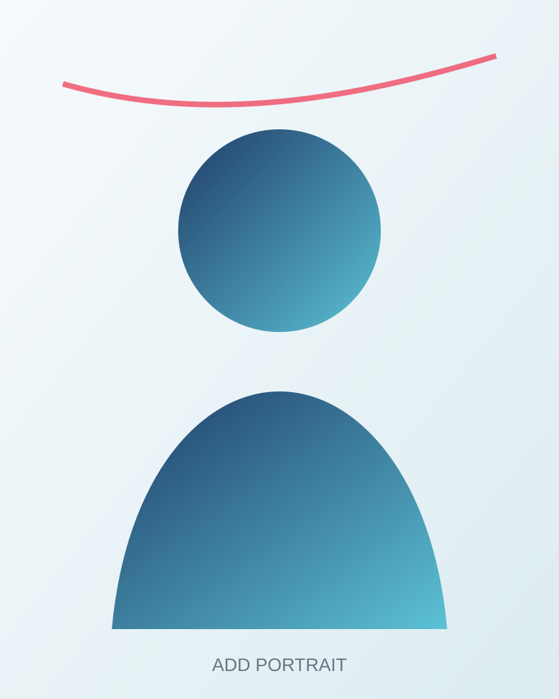

Fluid–structure interactions
How deformation redirects transport pathways.
Understanding how living matter organises, regulates and adapts fluid transport across scales.
Enter the research ↓
Replace this placeholder with your professional portrait when ready.
CNRS Researcher at LAAS–CNRS, Toulouse
I study the mechanics of fluid transport in living tissues, with a particular interest in fluid–structure interactions, poromechanics and multiscale transport. My work connects physical modelling with experimental collaborations in biology and cancer research.
I collaborate closely with colleagues at LAAS–CNRS and with the ImPACT team at the Toulouse Cancer Research Center (CRCT).
Biological tissues are permeated by water, solutes, cells and signalling molecules. Their movement depends on the coupling between pressure, deformation, geometry and active biological processes.
My research combines mechanics, fluid physics and quantitative biology to uncover the principles linking tissue architecture to transport function.
How deformation redirects transport pathways.
How porous living matter stores and releases fluid.
How microscopic flows become tissue-scale function.
My work is developed through close collaborations within CNRS and with the Toulouse Cancer Research Center (CRCT).
Collaborations in mechanics, robotics, modelling and the physics of living systems.
CNRS Researcher · LAAS–CNRS
Mechanics of living systemsName and position to add
Research topicName and position to add
Research topicA close collaboration with the Toulouse Cancer Research Center, focused on connecting tissue mechanics and transport phenomena with pancreatic cancer biology.
Discover the ImPACT team ↗INSERM Research Director · Head of the ImPACT team
Pancreatic cancer · Translational research CRCT profile ↗Laboratory Engineer · ImPACT team
Experimental cancer research CRCT profile ↗PhD Candidate · ImPACT team
Pancreatic cancer research CRCT profile ↗LAAS-CNRS
7 avenue du Colonel Roche
31031 Toulouse Cedex 4, France
LAAS-CNRS website ↗